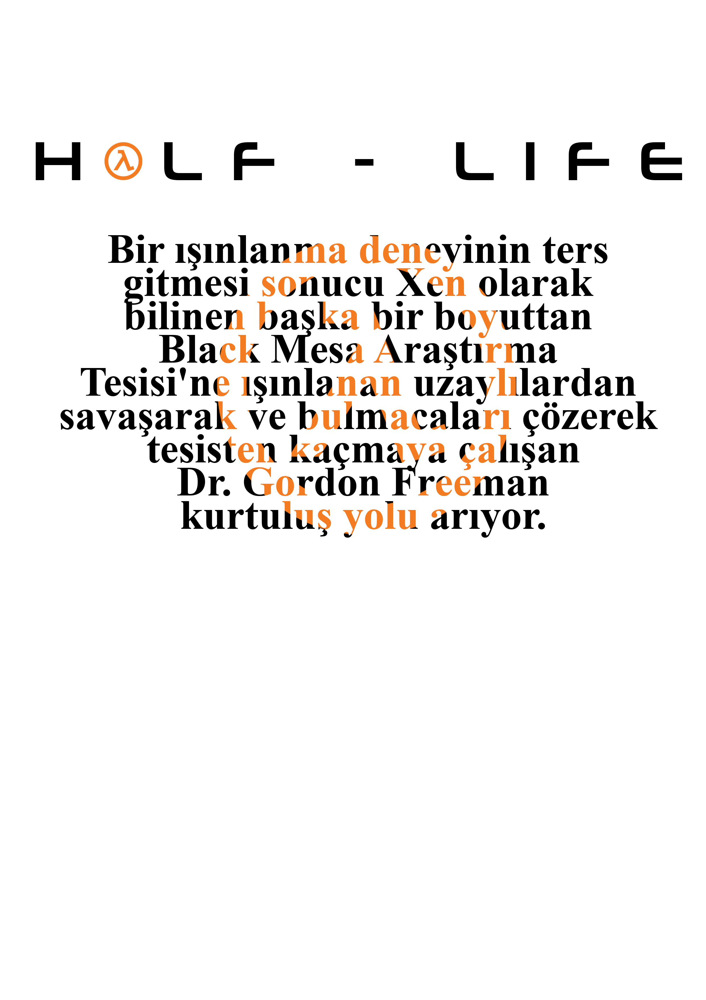

Counter Efsanesi
Ana Sayfa
Hakkında
İletişim
Blog

Counter Strike 1.6
Efsanevi olan o menü günümüzde halen oynanan bu oyun internet kafelerin uzun yıllar efsanesi olmuştur.
Assault, Dust2, Mirage, Inferno gibi maplerde oynanan bu oyunun çok beğenilmiştir 1.6 modu 2003 yılında çıkmıştır.
CSGO